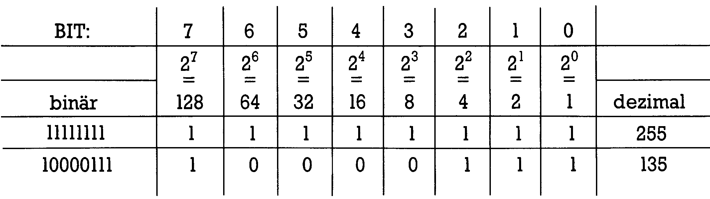
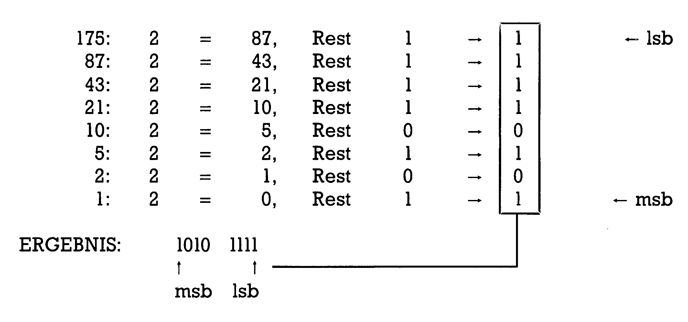
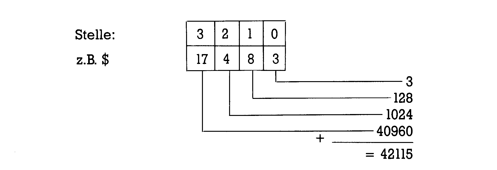
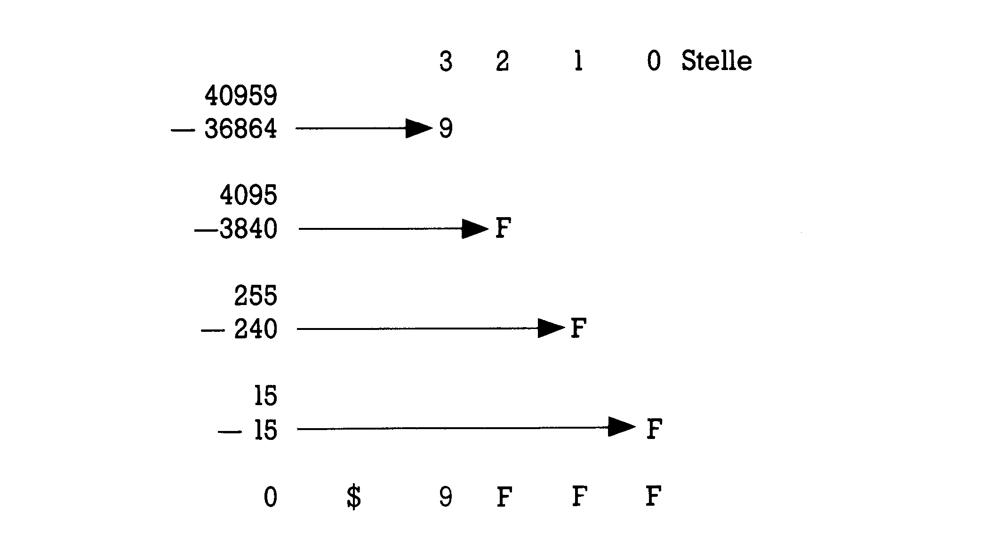

Von Basic zu Assembler (Teil 6)
In der Assemblerprogrammierung kommt man an Binärzahlen und Hexadezimalzahlen nicht vorbei. In dieser Folge erklären wir die beiden Zahlensysteme näher.
Was sind Zahlensysteme und wie kommt man mit ihnen zurecht? Bevor wir uns an neue Zahlensysteme wagen, ist es sinnvoll, zunächst erst einmal den Aufbau unseres täglich verwendeten zu verstehen. Sie werden sehen, daß wir von dieser Basis her alle anderen Systeme begreifen können.
Dezimalsystem
Haben Sie schon mal kleinen Kindern beim Zählen oder Rechnenzugesehen? Das geht da Finger für Finger. Wir besitzen im allgemeinen 10 davon und verwenden daher auch 10 verschiedene Ziffern: 1, 2, 3, 4, 5, 6, 7, 8,9 und 0. Im Lateinischen heißt zehn decem, weshalb dies die Basis des Dezimalsystems bildet. Solange die Menge dessen, was wir zählen, unter der Basiszahl (also 10) bleibt, haben wir keine Probleme Was aber kommt nach der 9? Hier hilft nun der geniale Trick weiter eine Zahl in mehreren Stellen zu schreiben. Ganz rechts außen steht dann die Einerstelle, links daneben eine Zahl, die angibt, wie oft man zu dem Wert in dieser Einerstelle die Basis unseres Zahlensystems (also 10) addieren muß. So bedeutet 49, daß zur Zahl 9 (in der Einerstelle) viermal die Basis 10 zu addieren ist: 4 =4x10 +9
Irgendwann kommt aber der Moment, wo auch das nicht mehr ausreicht. Was kommt denn nach 99? Das Konzept mit den unterschiedlichen Stellenwerten läßt sich fortführen: Vor der eben behandelten Zehnerstelle taucht dann die Hunderterstelle auf, die also angibt, wie oft zu dem Wert, der sich aus der Einer- und der Zehnerstelle ergibt, das Zehnfache unserer Basis (also 10 x 10 oder 100) zu addieren ist. Als Beispiel sehen wir uns die Zahl 493 an:
43 =4x10x10+9x10 +3
Jetzt wird Ihnen der Trick sicher klar: Die nächste vorgelagerte Stelle wäre die Tausenderstelle, die dann angäbe, wie oft zum schon berechneten Rest das Zehnfache des Zehnfachen unserer Basis (10x 10x 10 = 1000) zu addieren ist und so weiter. Die Schreibweise ist platzfressend, weshalb man sich der Potenzen bedient. Falls Ihnen dieses Wort nicht geläufig ist: Potenzen sind die Hochzahlen, die angeben, wie oft die Basis mit sich selbst malgenommen wird. So ist: 100 = 10x 10 = 10?
1000 = 10x 10x 10 = 10° und so fort. Außerdem haben es die Mathematiker als sinnvoll angesehen, festzulegen: 10 = lO! und
1 = 10
Eine Zahl 24237 kann daher also geschrieben werden als: 24237 = 2 x 10* + 4x 10° + 2x 10° + 3x 10! + 7x 10° = 2x 10000 + 4x 1000 + 2x 100 +3x10 +7
Die beiden Festlegungen für die Hochzahl 1 und Null sind übrigens ganz allgemein festgelegt: Eine Zahl hoch 1 ergibt immer die Zahl selbst, eine Zahl hoch Null ergibt immer 1. Es gilt also:
2l=2,51 =
2° = 1,50 = 1etc.
Das wird uns gleich von Nutzen sein, wenn wir auf andere Zahlensysteme umsteigen. Dieser Trick mit den unterschiedlichen Wertigkeiten der Stellen einer Zahl ist nämlich keinesfalls nur auf das Dezimalsystem beschränkt. Auch bei allen anderen denkbaren Systemen gilt, daß man immer dann, wenn man beim Zählen an die Basisminus 1 herankommt (also 9 im Dezimalsystem), eine nächsthöhere Stelle schafft.
Das Binärsystem
Ein Computer ist — vereinfacht gesehen (für manche mag es wie ein Sakrilegklingen) — im Grunde nur ein Haufen von Schaltern. Von reichlich vielen allerdings und auch sehr kleinen. Jeder Schalter kennt dabei nur zwei Zustände: Ein und Aus. Setzen wir anstelle dieser Worte nun Ziffern ein, dann entspricht dem »Ein« die Ziffer 1, dem »Aus« die Ziffer 0. Zwei Ziffern also: Der Computer befindet sich in der gleichen Lage wie das — bislang noch unentdeckte — Volk der Zweifingerlinge. Weil diese — im allgemeinen — nur zwei Finger besitzen, mit denen sie zählen können, basiert ihr Zahlensystem auf der Zahl zwei. Das lateinische »bini« heißt deutsch »je zwei« und man nennt solch ein System Binärsystem (manchmal auch Dualsystem vom lateinischen »duo«, was zwei heißt).
Wie zählen die Zweifingerlinge?
Wie bei uns fangen sie mit der 1 an. Aber das Problem, das uns die auf 9 folgende Zahl bereitet, stellt sich hier schon bei der auf 1 folgenden Zahl. Esgibtja keine Ziffer 2 in diesem System. Auch die Zweifingerlinge haben vor undenklichen Zeiten den Trick mit den verschiedenen Stellen herausgefunden. Wenn sie also die auf 1 folgende Zahl schreiben möchten, dann schaffen sie eine neue Stelle, die dann unserer Zehnerstelle entspricht und so fort. Die Zahlen von 1 bis 10 sehen bei den Zweifingerlingen (auch unser Computer ist einer) dann so aus: Zur Übung können Sie ja mal die Binärzahlen bis 255 aufschreiben. Wennbeilhnen dann 255 die Binärzahl 11111111 ergibt, dann haben Sie richtig gezählt.
Unsere Überlegungen von vorhin beim Aufbau des Dezimalsystems helfen uns nun bei der Umrechnung der Binärzahlen in Dezimalzahlen. Die Basis ist hier 2 und eine Binärzahl 1001 kann daher zerlegt werden in: 1001 = 1x2°+0x2?+0x2l + 1x20=1x8+0x4+0x2+ 1x1=9
Daß das stimmt, können Sie weiter oben in der Tabelle der Zahlen von 1 bis 10 nachprüfen. Auf diese Weise wird die Umrechnung von Binärzahlen in Dezimalzahlen recht einfach. Als Gedächtnisstütze bedient man sich eines Schemas wie in Bild 1:

In der oberen Reihe finden Sie darin die Bitnummer (das ganze habe ich auf ein Byte bezogen), darunter die Zweierpotenzen. In den beiden Reihen darunter sind noch zwei Berechnungsbeispiele gezeigt. Die Zweierpotenzen aller Spalten, in denen eine l steht, werden addiert und ergeben so den Dezimalwert.
Ebenso häufig stellt sich das Problem anders herum: Aus einer Dezimalzahl soll die Binärzahl berechnet werden. Eine einfache Methode dies zu tun, ist die fortlaufende Division der Dezimalzahl durch 2. Für Mathe-Spezialisten: Die mod(2)-Funktion (die leider nicht in unseren Basic-Versionen 2.0, 3.5 und 7.0 enthalten ist) wird mehrmals nacheinander auf die Dezimalzahl und die Divisionsergebnisse angewendet. In Bild 2 erkennen Sie das Verfahren:

Jedesmal wird also das Ergebnis der vorangegangenen Division wieder durch 2 geteilt, bis sich Null ergibt. Die Reste notiert man sich: Sie ergeben in der Reihenfolge »letzte Stelle .. erste Stelle« die Binärzahl.
Hat man sich erst einmal an die Zahlen der Zweifingerlinge gewöhnt, dann kann man damit ebenso gut rechnen wie mit den Dezimalzahlen. Das soll aber an dieser Stelle nicht unser Thema sein. Auch negative Binärzahlen gibt es und solche, die den Dezimalbrüchen (also Zahlen mit Nachkommastellen) entsprechen. All dies können Sie im Kurs »Assembler ist keine Alchimie«in den Kapiteln 11, 13, 29und 38 nachlesen (der Kurs erschien im 64'er Sonderheft 8/85 komplett, einige Korrekturen dazu wurden im 64'er-Magazin, Ausgabe 4/86, Seite 73, im Fehlerteufelchen veröffentlicht), wo auch auf die Art eingegangen wird, wie unser Computer solche Zahlen verarbeitet. Wir verlassen jetzt das Volk der Zweifingerlinge und suchen ein noch seltsameres auf.
Hexadezimalsystem
Im Mai 1891 entdeckte White das unterirdische Reich Atvabar. Sie werden sich erinnern (oder nicht? Dann lesen Sie es nach im Buch »The Gooddess of Atvabar, beingthe History ofthe Discovery of the Interior World and Conquest of Atvabar«, erschienen in New York 1892), daß William R. Bradshaw 1892 über Land und Leute berichtete. Über eines allerdings hat er nichts verlauten lassen, weil es ihn offenbar zu sehr verwirrte: Die Atvabarer sind Sechzehnfingerlinge! Genauso, wie es den Zweifingerlingen schwerfällt, in unserem Dezimalsystem zu rechnen (es fehlen ja sogar die Worte für alle Zahlen, die größer als die Basis 2 sind) hatte White — ein einfacher Seemann — Probleme, die Zahlen der Atvabarer gedanklich zu erfassen, weshalb er das ganze gegenüber Bradshaw einfach verschwieg.
Wir haben diese Schwierigkeiten nicht (oder?) und verwenden anstelle der uns unbekannten Ziffernsymbole einfach die ersten Buchstaben des Alphabets. Wenn solch ein Sechzehnfingerling die Finger an seinen beiden Händen zählt, dann sieht das so aus:
| Zählweise | |
|---|---|
| eines »Atvabarers« | von uns |
| 1 | 1 |
| 2 | 2 |
| 3 | 3 |
| 4 | 4 |
| 5 | 5 |
| 6 | 6 |
| 7 | 7 |
| 8 | 8 |
| 9 | 9 |
| A | 10 |
| B | 11 |
| C | 12 |
| D | 13 |
| E | 14 |
| F | 15 |
| 10 | 16 |
Auch wenn die Atvabarer ansonsten etwas merkwürdig sind (so fahren sie Fahrräder ohne Räder!), so verwenden sie doch den gleichen Trick bei Zahlen, die größer sind als die Basis minus 1: Auch sie schaffen höherwertige Stellen, wie Sie aus der letzten Zahl der obigen Reihe entnehmen können. Versuchen Sie doch einmal, weiter zu zählen bis 255. Wenn Sie dann auf die Zahl FF kommen, war alles richtig.
Irgendwann einmal in der Anfangszeit der Computerei muß einer der Elektronik-Pioniere etwas von dieser Eigentümlichkeit der Atvabarer erfahren haben. Anders ist es kaum zu erklären, daß das Zahlensystem dieses vergessenen Volkes — welches nun den Namen Hexadezimalsystem oder kurz Hex-System trägt und dessen Zahlen durch ein vorgestelltes Dollarzeichen ($) gekennzeichnet werden — heute bei Assembler-Programmierern so eine gewichtige Rolle spielt. Eine andere Erklärung wäre es, daß man im Adreßraum von 8- und 16-Bit-Computern besonders leicht damit rechnen kann. Vielleicht ist das auch nur eine Glaubensfrage.
Wie dem auch sei: Ebenso wie bei anderen Zahlensystemen ist auch dieses hier — auf der Basis 16 (oder F für die Sechzehnfingerlinge) — nach den Regeln aufgebaut, die wir vorhin beim Dezimalsystem erklärt haben. Eine Hexadezimalzahl $831 kann man in die Dezimalzahl umrechnen:
Zwar ist es auf diese Weise möglich, jede Hexzahl umzurechnen; es ist aber auch ziemlich mühsam. Deshalb bedient man sich dazu einer Tabelle, wie sie hier als Tabelle 1 abgedruckt ist:
| 3 | 2 | 1 | 0 | STELLE | |
|---|---|---|---|---|---|
| 0 | 0 | 0 | 0 | 0 | |
| 1 | 4096 | 256 | 16 | 1 | |
| 2 | 8192 | 512 | 32 | 2 | |
| 3 | 12288 | 768 | 48 | 3 | |
| 4 | 16384 | 1024 | 64 | 4 | |
| 5 | 20480 | 1280 | 80 | 5 | |
| 6 | 24576 | 1536 | 96 | 6 | |
| 7 | 28672 | 1792 | 112 | 7 | |
| 8 | 32768 | 2048 | 128 | 8 | |
| 9 | 36864 | 2304 | 144 | 9 | |
| A | 40960 | 2560 | 160 | 10 | |
| B | 45056 | 2816 | 176 | 11 | |
| C | 49152 | 3072 | 192 | 12 | |
| D | 53248 | 3328 | 208 | 13 | |
| E | 57344 | 3584 | 224 | 14 | |
| F | 61440 | 3840 | 240 | 15 |
Die erste Zeile dieser Tabelle enthält die Stelle der Ziffer, die erste Spalte die Hex-Ziffer. In den Kolonnen sind jeweils die Dezimalzahlen angegeben. Um beispielsweise die Hex-Zahl $A483in eine Dezimalzahl umzurechnen, geht man vor wie folgt (siehe auch Bild 3):

In der nullten Stelle unserer Zahl steht eine 3. Wir gehen also in die Tabelle und suchen in der Spalte 0/ Zeile 4 (das ist die Zeile, vor der links die 3 steht) den Dezimalwert heraus. Das ist die Zahl 3. Dann gehen wir zur Stelle 1 (das ist die 8 unserer Hex-Zahl). In der Tabelle findet sich in der Spalte 1/ Zeile 9 (die Zeile, vor der 8steht) der Dezimalwert 128. Den addieren wir zur vorher gefundenen 3 dazu. Für die weiteren Stellen verfahren wir ebenso und erhalten dann — wie im Bild gezeigt — die Dezimalzahl 42115. Probieren Sie dieses Verfahren einmal aus: Nach einiger Zeit wird es Ihnen leicht fallen, auf diese Weise die Zahlenumrechnungen durchzuführen.
Der umgekehrte Weg der Berechnung, nämlich aus einer gegebenen Dezimalzahl die Hex-Zahl zu bestimmen, funktioniert ebenfalls mit der Tabelle ganz gut. (Für die Freaks: Man kann das auch ähnlich wie oben bei den Binärzahlen machen, nämlich mittels einer mod(l6)-Funktion). Nehmen wir mal die Dezimalzahl 40959 (siehe Bild 4).

Wir suchen aus den Dezimalwerten der Tabelle den heraus, der gerade noch kleiner ist als unsere Zahl: 36864. Den zu diesem Wert gehörigen Hex-Wert in der linken Randspalte notieren wir uns als die höchste Stelle der Hex-Zahl, ziehen dann den Wert von unserer Dezimalzahl ab und erhalten eine neue dafür: 4095. Wieder suchen wir die nächstkleinere Dezimalzahl aus der Tabelle heraus — das ist nun 3840 — notieren uns den dazugehörigen Hex-Wert, subtrahieren und so fort, wie in Bild 4 gezeigt wurde. tern oder Worte in 16-Bit-Computern lassen sich mit genau 16 Bit ausdrücken, was einer Hexzahl von vier Stellen entspricht. Ein Byte ist 8 Bits lang und genau eine zweistellige Hexzahl und ein Halbbyte (Insider nennen sowas ein Nibble) ist 4 Bit lang und läßt sich durch eine einstellige Hexzahl erfassen.
Es kann sogar sein, daß Sie es als Assembler-Programmierer weitgehend schaffen, solchen
Zahlensystem-Umrechnungen per Hand fast ganz aus dem Weg zu gehen. Sowohl der Monitor des C 128 als auch beispielsweise der SMON enthalten Funktionen, die diese Umrechnungen für uns erledigen. Die meisten besseren Assembler — so auch der Hypra-Ass — dürfen sowohl mit Hex- als auch mit Dezimalzahlen angesprochen werden, meist wird man hier ohnehin mit symbolischen Adressen oder Werten arbeiten (also solchen, die zu Beginn mittels .EQ einen Namen erhalten haben). Aber wie es der Teufel so will, manchmal vergißt man es, sich die Startadresse eines Programmes rechtzeitig in den Dezimalwert umrechnen zu lassen und möchte nun nicht eigens wieder den Monitor laden oder man findet eine interessante Stelle in einem ROM-Listing, die mal schnell von Basic her ausprobiert werden soll oder...
Genug der Zahlenspiele: In der nächsten Folge werden wir die Schleifenprogrammierung weiter bearbeiten.
(Heimo Ponnath/dm)